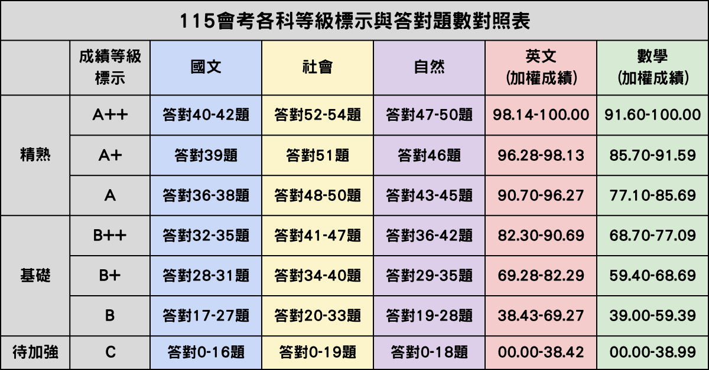

會考積分
25.8
五科 35 + 作文 1，滿分 36
等級組合
5A
+ 標示數 0
落點筆數
0
有機會學校
A
B++
A+
A
5
5
5
5
0.8
115 級距表：國社自看答對題數，英數看加權成績

| 公私 | 縣市 | 區域 | 學校 | 科別 | 113 | 114 | 115 預估 | 落點 |
|---|
資料來源：甄戰 115 基北區落點、
甄戰 115 會考級距、
高工/高商採使用者提供之高中職 112/113/114 會考最低分數 PDF/JPG。沒有分數的科別不列入；錄取分數僅供志願評估。